ABOUT US
Region 1 is the churches, leaders, church-goers, and people who minister and live all throughout the Ventura, Santa Barbara, and San Luis Obispo counties. It is marked by incredible diversity, as we are culturally, ethnically, and economically diverse.
We are roughly 200 miles end to end, with 34 churches that range from approximately 30 to 1,800. We have a passionate desire to see our communities reached with the love of Jesus.
We are seeing our churches strengthened and resourced, watching as Jesus' Church united and works together. We are developing and praying for more pastors, planters, and people to partner with us in further reaching our region. We firmly believe that God has even greater things in store for Region 1 in the days and years to come!
MEET THE TEAM REGIONAL LEADERSHIP TEAM (RLT)
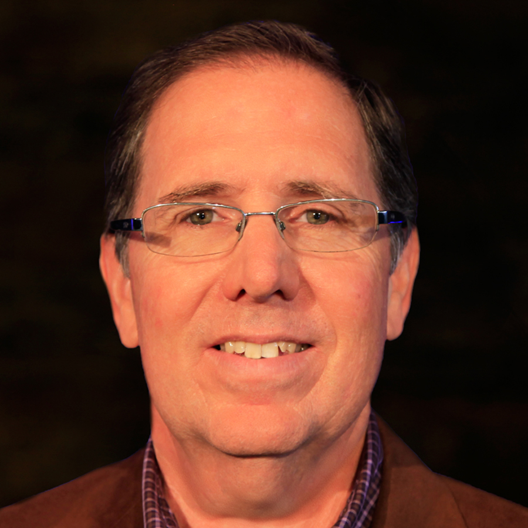
Ted Pugh
Executive Presbyter
"God called me to pastoral ministry when I was in my early 20's. The core of my call has been two-fold: first, to see people come to faith, be discipled, and grow their faith. Secondly, to help develop and equip pastors and leaders. It is amazing because being the lead pastor at Ventura First Assembly and Executive Presbyter (EP) for Region 1, I have the privilege of fulfilling both aspects of God's call on my life in some incredible ways. I love the opportunities I have as the EP to invest and come alongside pastors and leaders throughout our Region. I have a passion for Region 1 and I am excited to see all that God continues to do in our Region!"
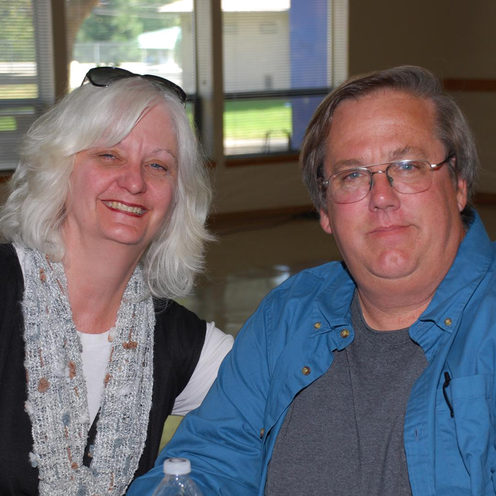
Charles (Chas) Wolf
Men's Ministries Representative
"I will be working with Gordon and Don on Men's Ministries. I have just joined the RLT at the end of 2017. I have been working full time as a business owner. Prior to that, I was a youth pastor, single adult pastor- concurrently I offered thirty years of volunteer work doing everything imaginable in Ventura, California."
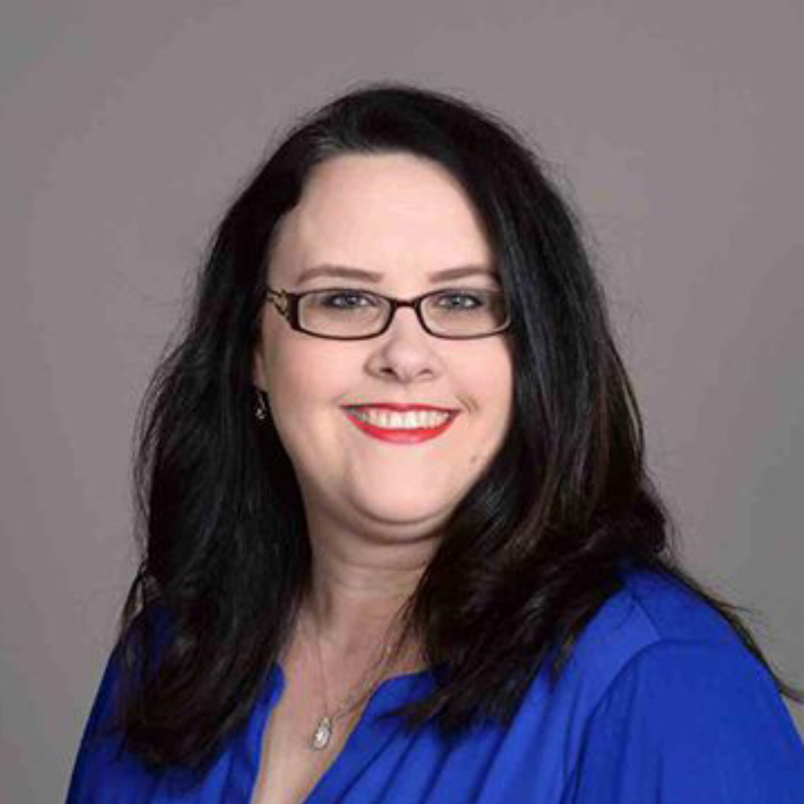
Deb Bloom-Roberson
Credentialed Female Representative
Deb is Lead Pastor of New Hope Christian Church in Lompoc and Executive Pastor of Pacific Christian Center in Santa Maria, California. She is a fourth-generation ordained Assemblies of God minister and the first woman in her family to receive credentials. She and her husband, Matt, have three kids: Ricky, Priscilla, and Paul.
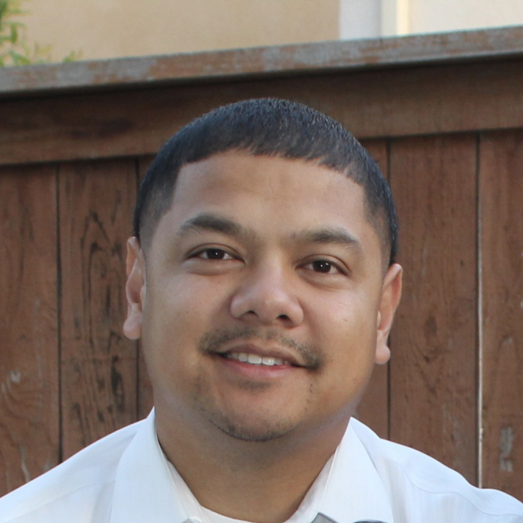
Paul Vicente
Intercultural Representative
Paul B. Vicente has been serving on the RLT (Intercultural) since 2015. He is the Lead Pastor of a multi-cultural church in Oxnard, California, Full Life Christian Assembly. He also serves the secretary of the Filipino-American Fellowship of the Assemblies of God.
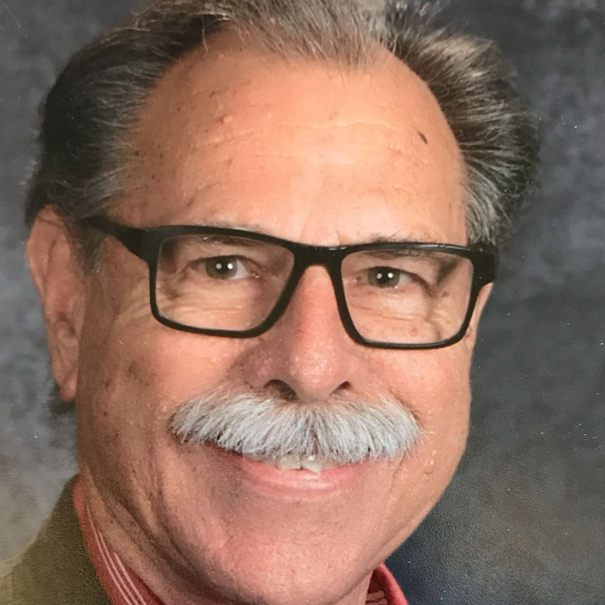
Phil Young
Kid's Ministries Representative
"Presently serving as Outreach and Children's Pastor at Pacific Christian Center in Santa Maria, California since 2007. Member of SoCal Network's Kid's Executive Board, etc. Married, grandpa, and great grandpa!"
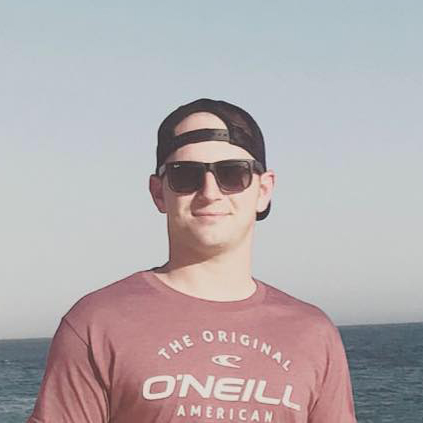
Joe Moss
Under 40 Representative
Currently the Executive and Worship Pastor at Crossroads Church in Buellton, California, Joe is a young family man who serves on the RLT as the 'Under 40' Engage Representative. He has served in full-time ministry all over California for the past 10+ years; his experience (and age) make him a wonderful asset to the RLT and a perfect representative for the 'Under 40' ministers and leaders in Region 1.
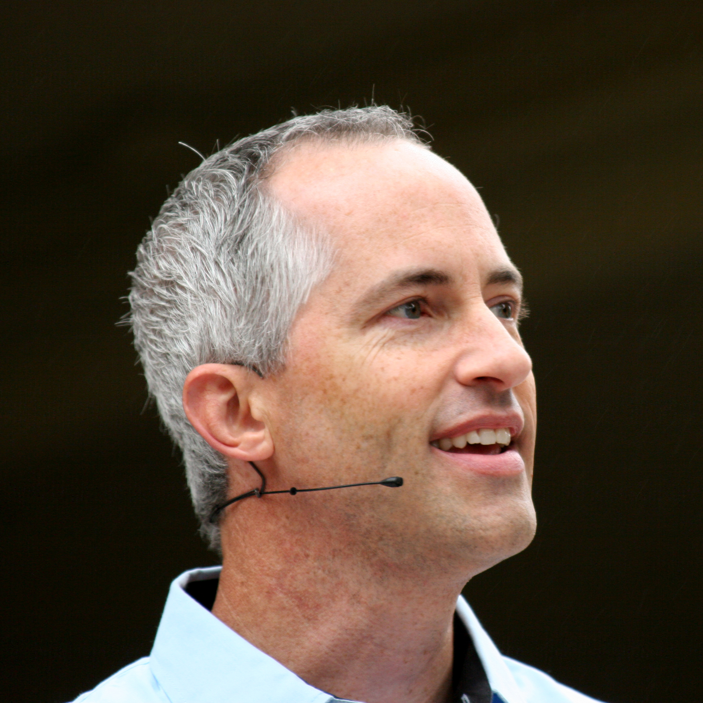
Ron Triggs
Missions Representative
In Ron's time serving Church of the Living Christ (Ojai, California), he has led or partnered with outreach teams that have gone to places like Romania, Jamaica, Mexico, Colombia, and Haiti. He has a heart to see the full potential of local church realized by challenging Christ-followers to join the greater mission of Christ, both stateside and around the globe. Although the mission is great, Ron is convinced that no church is too small to touch our world with the hope of Jesus.
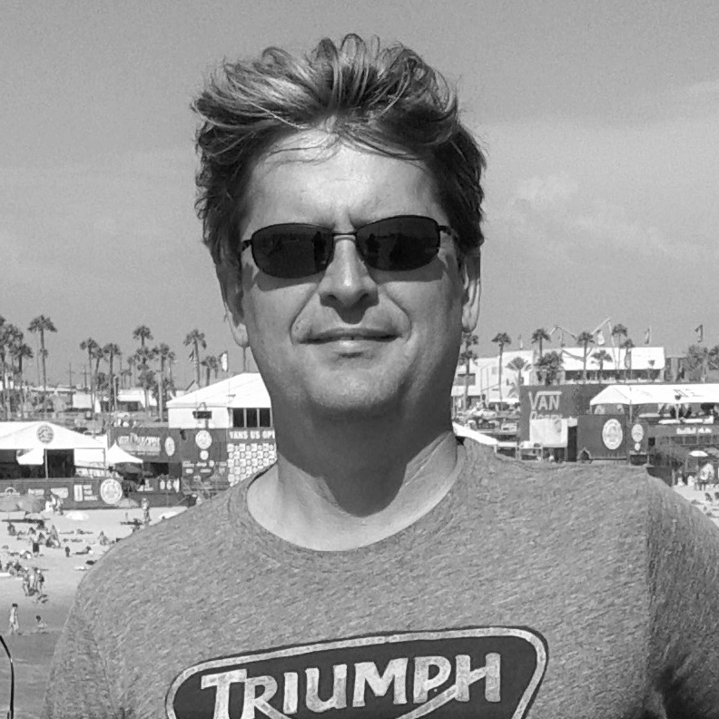
Jeff Saylor
Northern Fellowship & Credentials Representative
Pastor Jeff has been serving as an Assembly of God pastor for sixteen years and a missionary to China for seven years. He is a graduate of Vanguard University and holds an MDiv from Fuller Theological Seminary. Jeff's favorite part of ministry is connecting with people and helping them to succeed in their calling and vision.
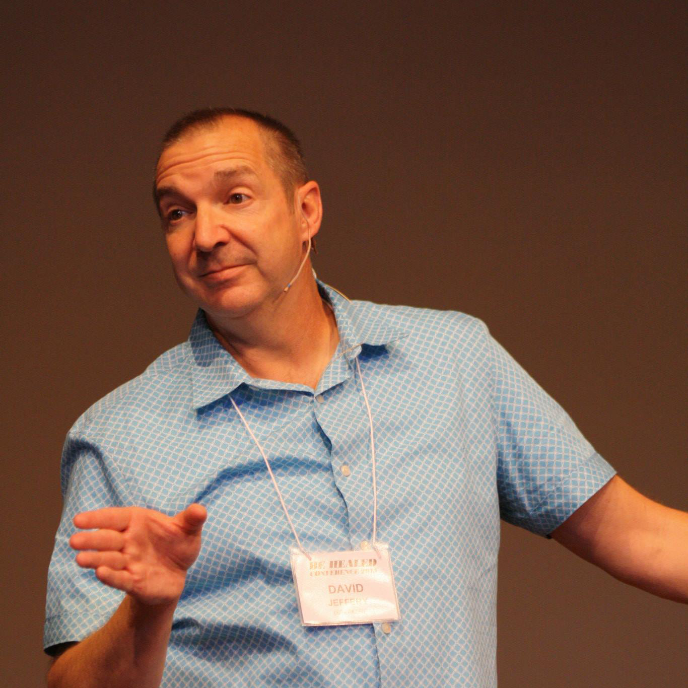
David Jeffery
Southern Fellowship & Credentials Representative
Pastor David has been involved in pastoral ministry for over twenty-five years and currently pastors Freedom Church in Thousand Oaks, California. He is a graduate of Bethany University in Santa Cruz, California, where he met the love of his life, Kim, and married her. They are still married and David praises Kim for being a much nicer person than he is and credits her for laughing at all of his jokes (well, most of them anyway). David earned a Master of Arts degree from Fuller Theological Seminary, and is currently working on his Doctor of Ministry degree from AGTS.
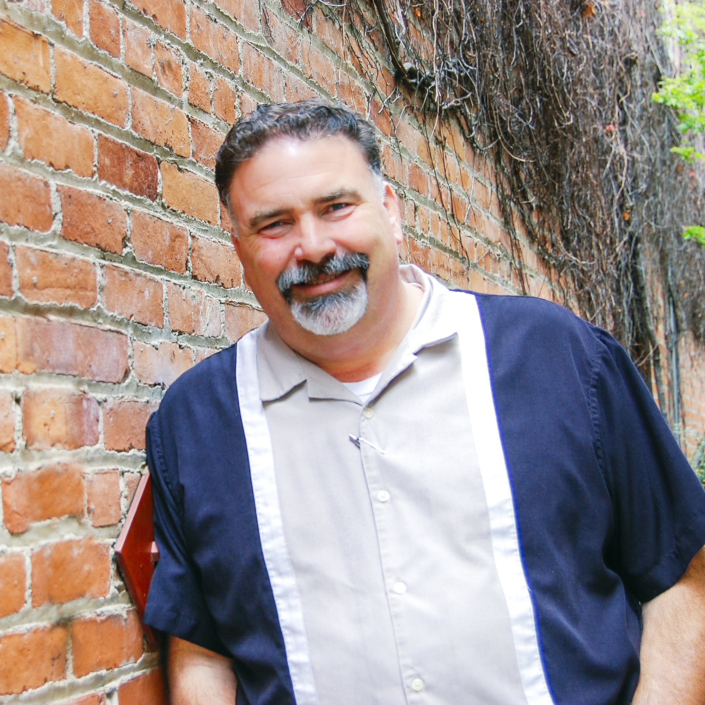
Kevin Gotchal
Central Fellowship & Credentials Representative
Pastor of LifePoint Church in Arroyo Grande, California.
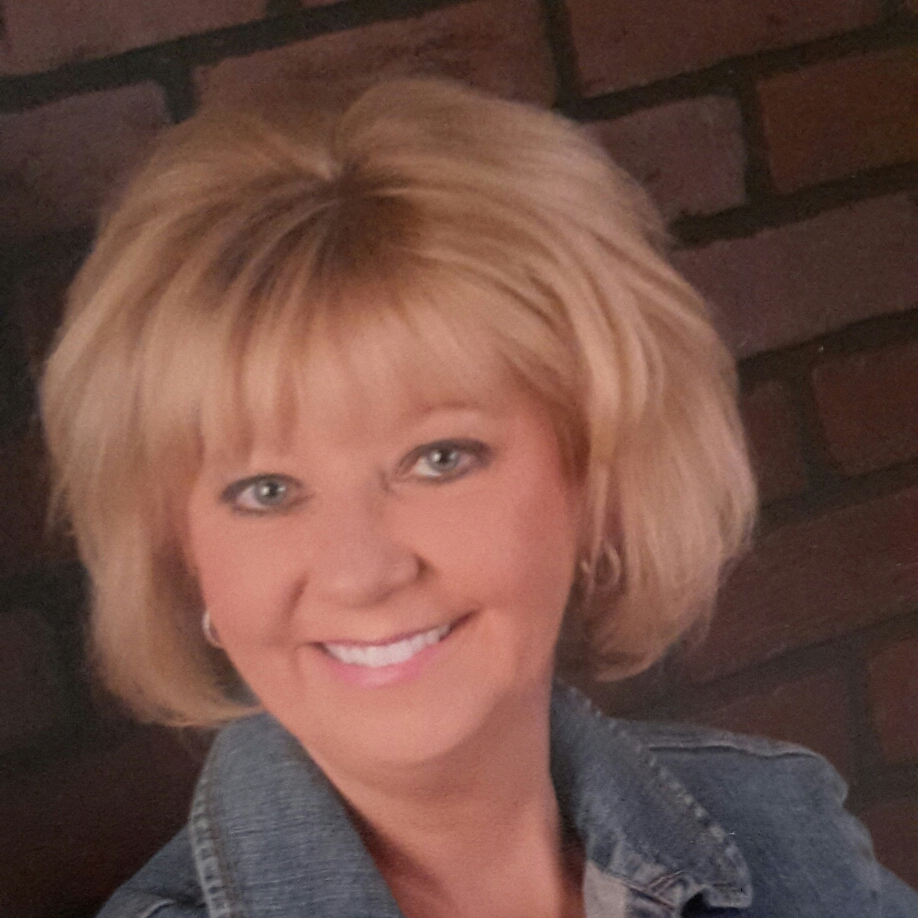
Peggy Still
Women's Ministries Representative
Peggy Still currently serves as the Office Administrator and Ministry Support at New Hope Christian Church in Lompoc. Peggy has been married to Mark for 40 years. They have 1 daughter and have raised 2 foster children and 10 godchildren. Through the years, she has served in a variety of ministry roles in churches, including women, youth, children, and finance committees. In addition, Peggy has written over 400 devotions for My Purpose Now, writing to women about finance, social issues, and leadership. With a wide range of gifts and experience, she joins the RLT as the new Women's Ministries Representative.
Wendell Mathis
Youth Ministries Representative
"God has positioned me as PLUG youth ministry's pastor of Atascadero First Assembly; serving now 2 years. Prior to that, I served on the church board as a youth leader and headed AFA's marriage ministry beside my wife, Jamie, for the past 7 years."
Frank Triggs
Engage Leader
TBD
Compassion Representative